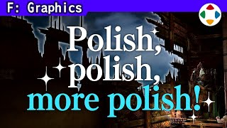
速览
这是三岛道场舞台的墙壁破坏。监修中特别费劲的，他想到的是大鹏号和这面墙：大鹏号规模大，这个规模小，却怎么也做不好。看看监修时留下的图：首先舞台组交上来的图是这样；他做了修图「希望这样」，应能传达板被破坏的印象。板的断面像用锯子切的，他指定前后板要错落成锯齿而不是垂直于板。板面向前弯得软塌塌，所以写了指示图：保持板面 X 坐标，在 Y 和 Z 方向做锯齿。锯齿很规则，要求不规则；远看三根柱子规则地残留，要求打散。调整后仍有问题：锯齿像钟乳石一样圆、仍规则，不太有板裂开的感觉；远看墙像方形被抠掉，看不见的背面反而更有气氛。再调后仍有平坦和偏软的部分；柱子像钟乳石一样笔直尖、像复制粘贴一样同形，要求打破。正面看规则；碎片对斗士通过的中线垂得太低，要求抬高。完成版很好，是最佳表现。说穿了，只要真正表现出木板被破坏就好；即使偏离他的想象，品质有保障就 OK。这面墙虽难但做成了，算好的；有时多次监修仍想象不同或品质不够，这时只能决断，按原样产品化——他目的也不是把一切做到理想，意外地放得下，但还是会后悔，最好清爽完成。监修常常期待前进一步，却只进了半步或更少；请对方大幅摆动再由监修拉回更容易收敛，但那样导演看起来每次说的都不一样，很难。这既是导演的责任也是美术的责任，团队要互相协作做出足够品质的东西。
1. 最难监修的一面墙 0:05
这是三岛道场舞台的墙壁破坏。监修中特别费劲的，他想到的是大鹏号和这面墙。大鹏号规模大；这个规模小，却怎么也做不好。
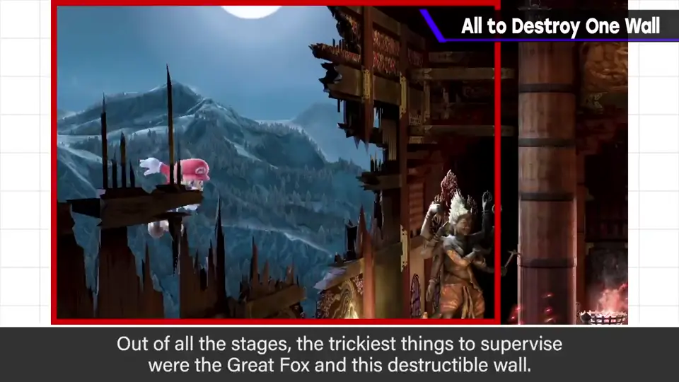
看看监修时留下的图。首先，舞台组交上来的图是这样；他做了一张修图「希望这样」，应该能传达板被破坏的印象。
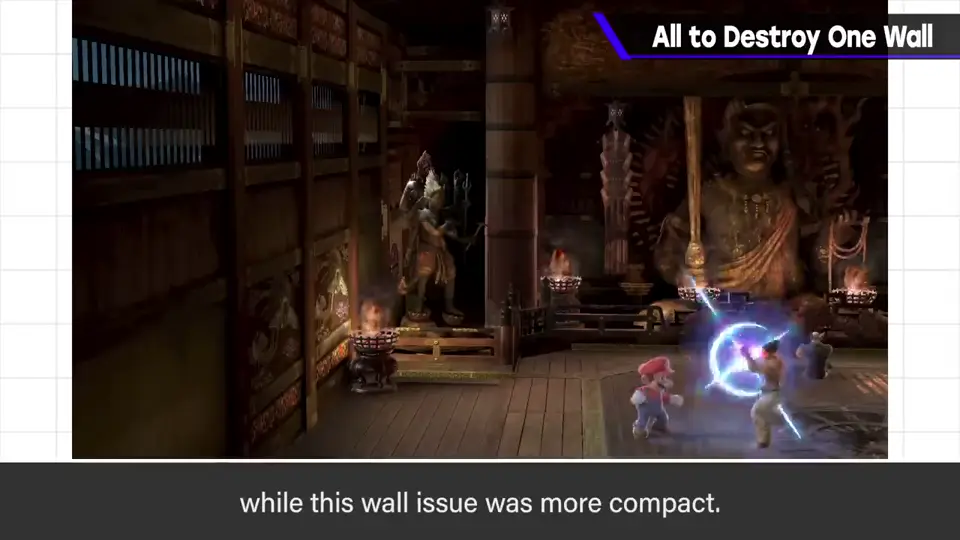
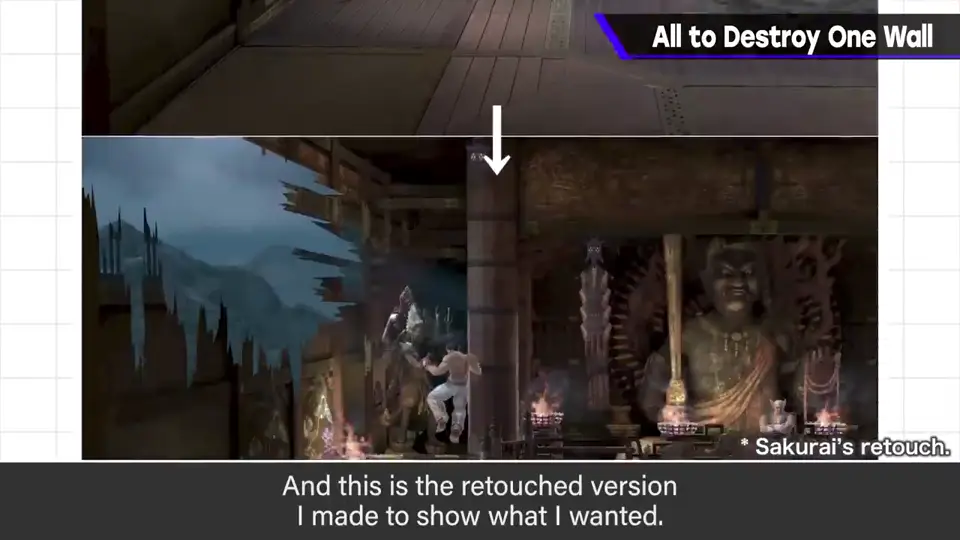
2. 第一轮指示 0:47
板的断面像是用锯子切出来的。他指定不要垂直于板，而是让前后的板错落成锯齿。
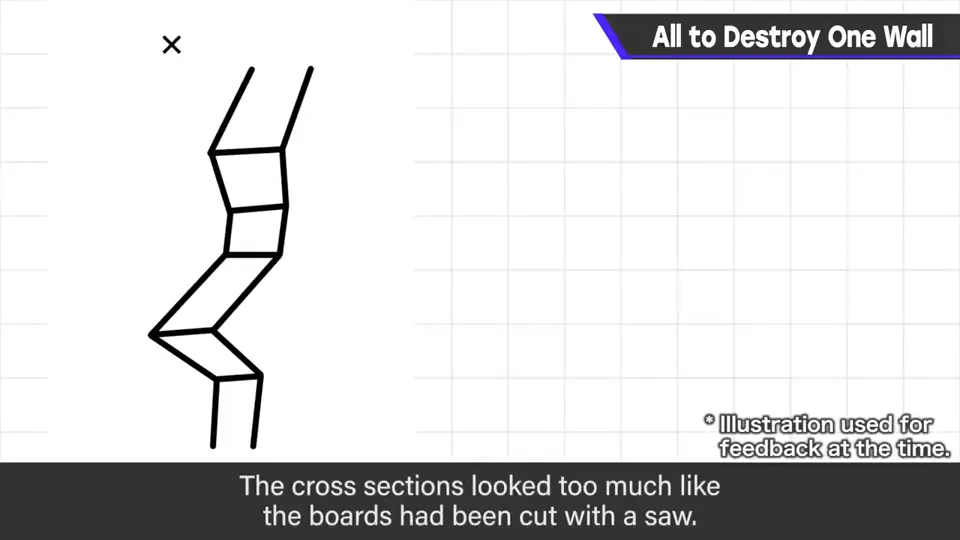
板面向前弯曲、软塌塌的，所以他画了指示图：保持板面的 X 坐标，在 Y 和 Z 方向做锯齿。
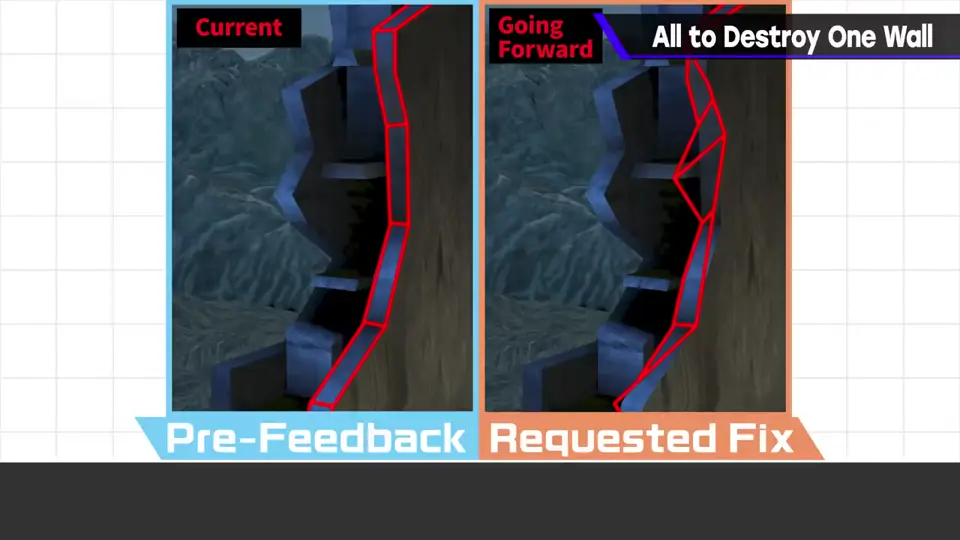
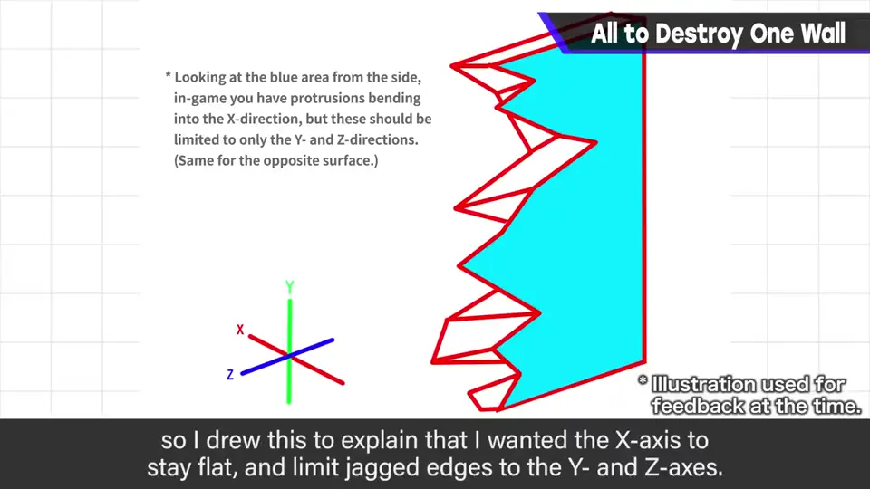
- 锯齿太规则 → 要求不规则。
- 远看三根柱子规则地残留 → 要求打散。
3. 调整后仍有问题 1:35
调整后仍有各种问题：锯齿像钟乳石一样圆，或仍很规则，不太有板裂开的感觉。远看墙像方形被抠掉；看不见的背面反而更有气氛。
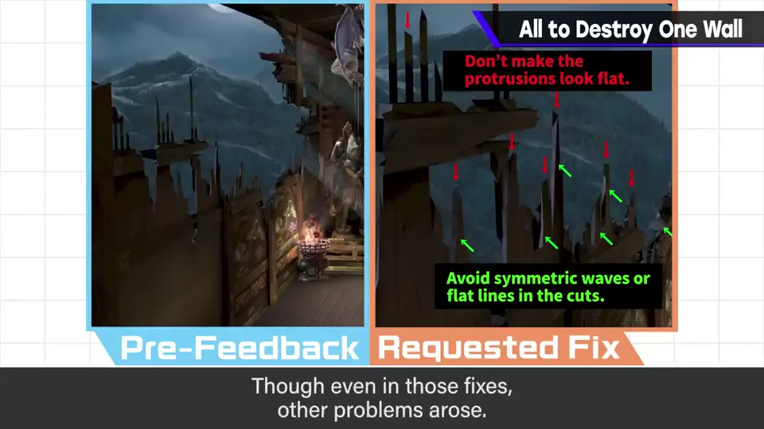
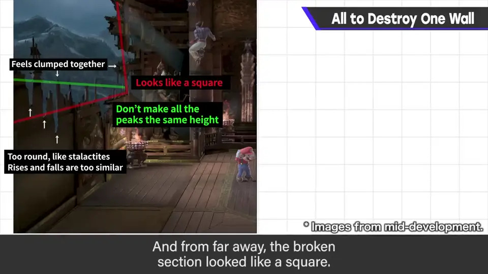
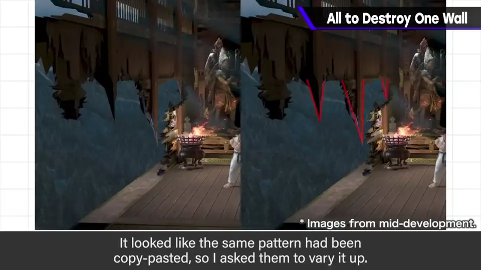
再调整后，还残留平坦和偏软的部分。柱子像钟乳石一样笔直尖，像复制粘贴一样同形，要求打破。
正面看也很规则；碎片对斗士通过的中线垂得太低，要求抬高。
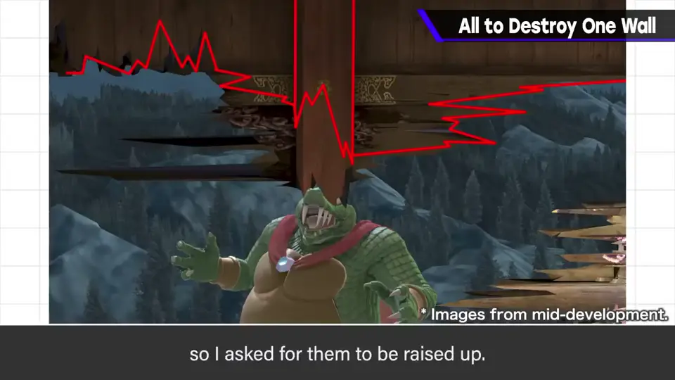
4. 完成版 2:22
完成版的墙壁破坏是这样：这样就很好，是最佳表现。
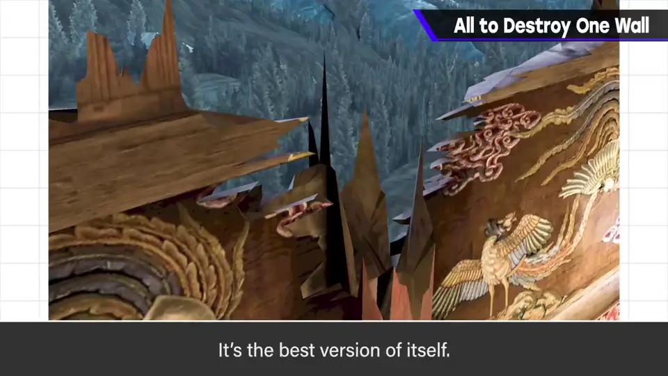
5. 做不好时只能决断 2:45
不过这面墙虽然难，最后做成了，还算好的。有时多次监修仍然想象不同，或品质无法保证。
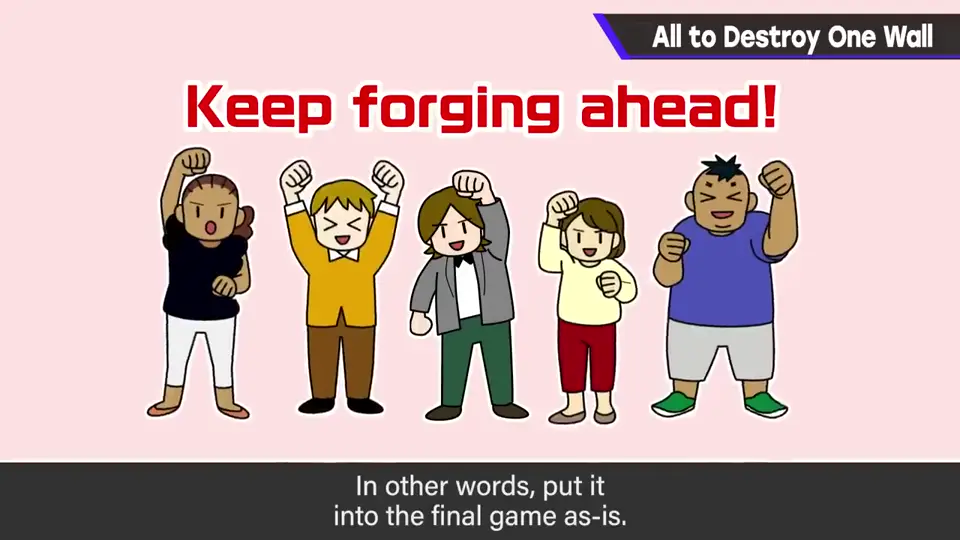
6. 一步与半步 3:30
监修时常常期待前进一步，结果只进了半步或更少。
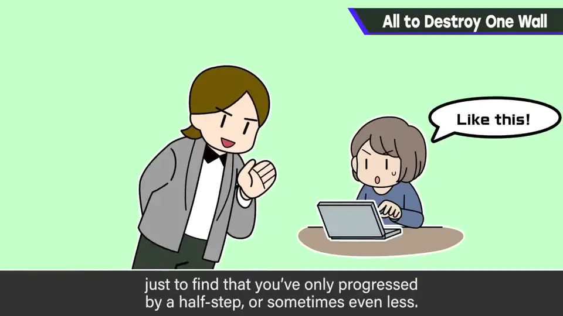
请对方大幅摆动、再由监修拉回，更容易收敛；但那样又像导演每次说的都不一样，也很难。
自测题
1. 板面「软塌塌地弯曲」时，樱井给出的指示是什么？
保持板面的 X 坐标，只在 Y 和 Z 方向做锯齿。 1:06
2. 樱井判断 OK 的标准是什么？
只要真正表现出木板被破坏、品质有保障，即使偏离他的想象也 OK。 2:40
3. 多次监修仍不行时怎么办？
只能决断，按原样产品化——但会后悔，最好清爽完成。 3:05